Installing Linux on your system
May 05, 2020A Simple Guide on Installing KDE Neon on your System. If you are a programmer, Linux is for you.
KDE Neon Plasma Desktop Linux Free and Open SourceKDE neon is the intersection of these needs using a stable Ubuntu long-term release as its core, packaging the hottest software fresh from the KDE Community ovens.
Before getting started with the Installation,We need to know a tiny difference of Linux and Windows Installation is the distribution of the System Files.
In Windows, the system files are stored in the Windows-Basic-Partition (Local Disk C:) in
In Linux, the system files are stored in the Root Drive in Global Root
A sneak peak of my Desktop.
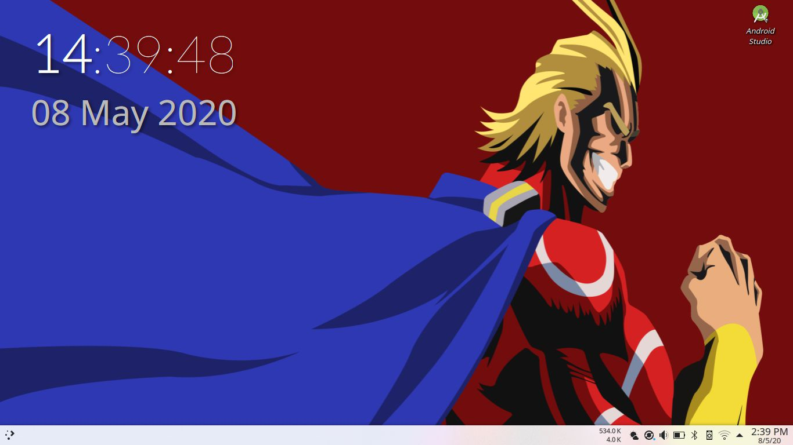
Steps to Install Linux

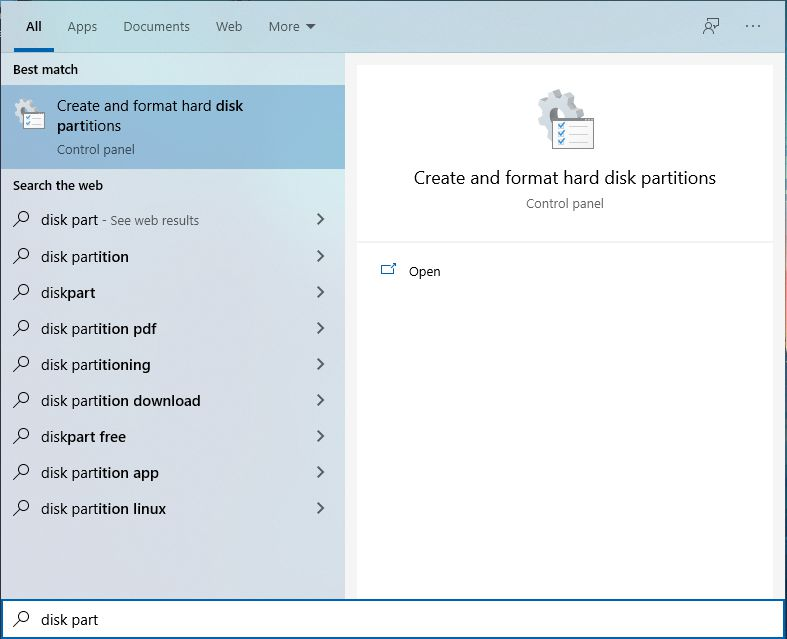
Note: This step is risky No responsibility will be taken if any Data is lost or your current OS is not Booting.
If you have a tech buddy, as for their help, as this step is crucial yet Risky too.
Now, the risky business, Create an Unformated partition by either Shrinking an existing partition or deleting an entire partition(Deleting, will cause all your data on that partition to be lost).
We plan to install Linux as separate partitions, but is irrelevant at this step.
Linux can be minimally installed on 10GB storage, but I'd recommend a minimum of 20GB and a maximum of 200GB for Linux. If you have ample storage (250GB or more), I'll help you create a Shared Partition that's accessible to both Windows and Linux (stay tuned...).
Tip: Remember the Size of the partition as it helps in identifying it in the Linux setup. After preparing an Unformated partition, We are now ready for the Next Step.
Next, We need to enable the USB-Boot Option in the BIOS.
It is fairly simple, Plug-in your USB Device into the system and reboot your system while pressing theF12 or F2
For some Systems, these Keys might change, If u face dificulties checkout the Hotkeys List Here.
Disable Secure Boot. Now some system have been known to face issues booting to Windows after Toggling this option. So, it's better to Try booting to Windows (with Secure Boot OFF) Toggle the Secure Boot Back ON, if u face issues.
Assuming there was no Issues, Re enter the BIOS. using the keys mentioned in your system (on the right side of your bios screen), push the USB Boot Entry up the Boot Priority.
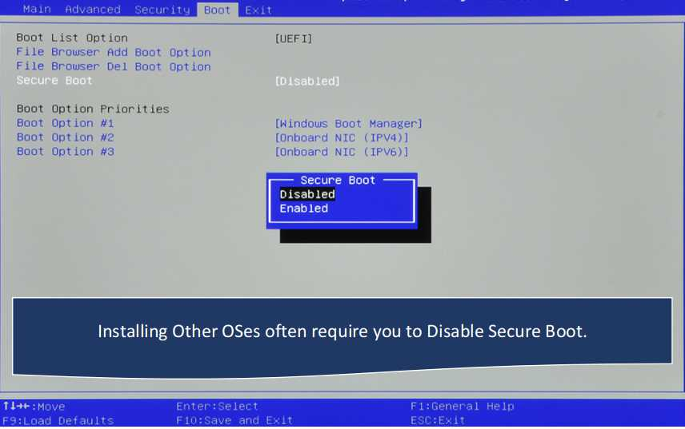
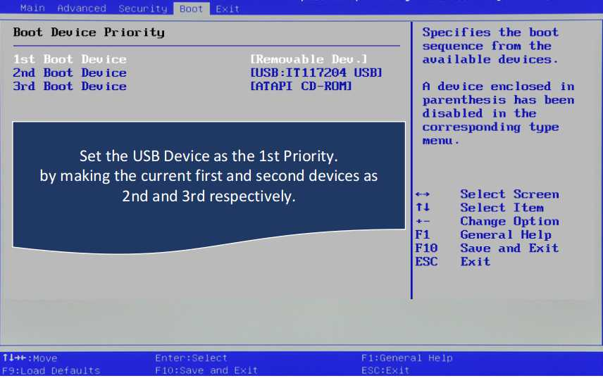
It is fairly simple, Plug-in your USB Device into the system and reboot your system while pressing the
For some Systems, these Keys might change, If u face dificulties checkout the Hotkeys List Here.
Disable Secure Boot. Now some system have been known to face issues booting to Windows after Toggling this option. So, it's better to Try booting to Windows (with Secure Boot OFF) Toggle the Secure Boot Back ON, if u face issues.
Assuming there was no Issues, Re enter the BIOS. using the keys mentioned in your system (on the right side of your bios screen), push the USB Boot Entry up the Boot Priority.
While Booting (after setting USB Boot Priority),
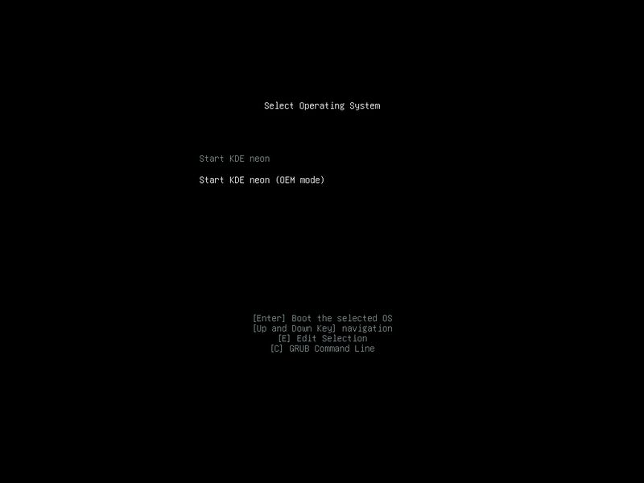
We Select theInstall KDE option. and Follow the Wizard.
You will boot to a GUI Environment, Plasma (psst, this is a sneak peek to the real deal,hehe). Click the iconInstall KDE and follow the Wizard.
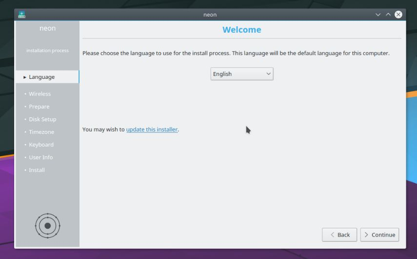
Once you reach a page asking where to Install,
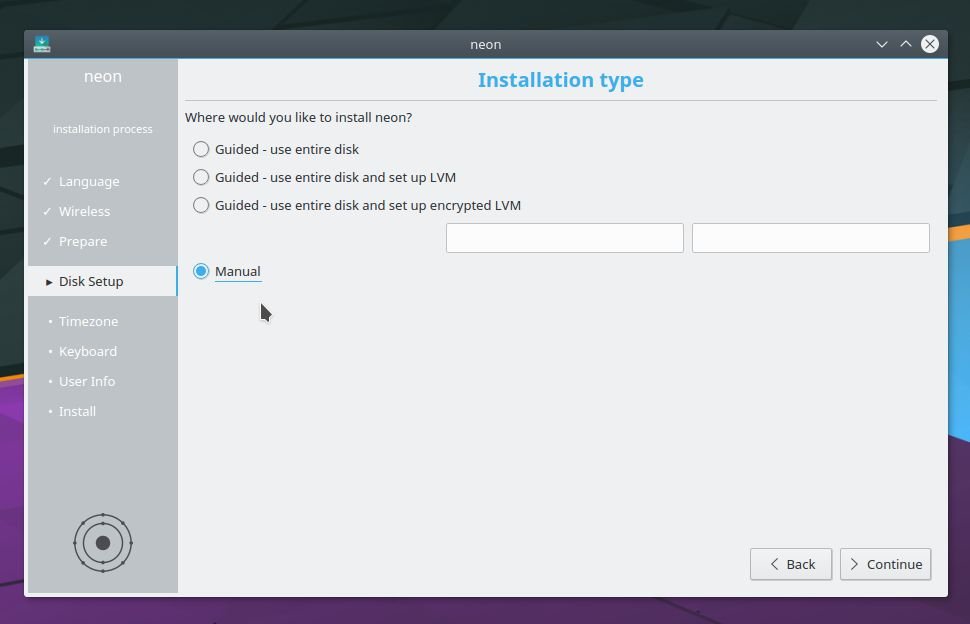
Here, Select:Manual Installation . After a few moments, all the available partitions are seen as a list.
Locate the Unformated partition (that match the size we allocated in windows multiplied by 1024) and selectMount Point: \ with 30% of the Unformated drive (do the math and select the number of Megabytes 1GB=1024MB).
After setting / , click the left over 70% and set Mount Point: home
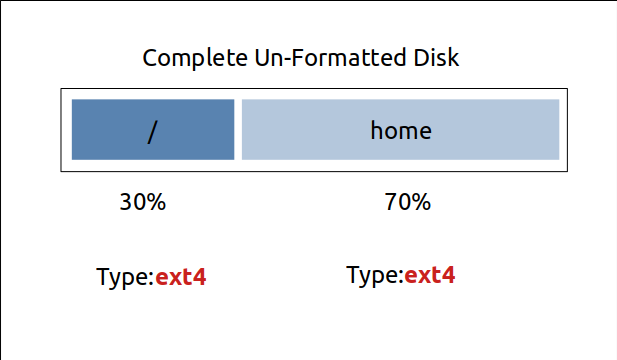
You may setFormat partition but that's optional. Select Partition type: ext4 for best performance.
Continue the Wizard, and wait for the prompt to Reboot.
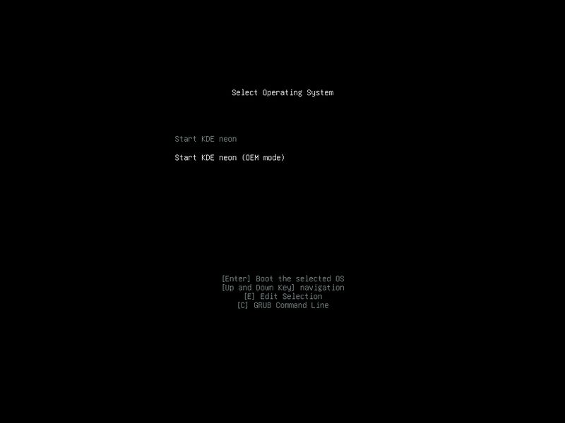
We Select the
You will boot to a GUI Environment, Plasma (psst, this is a sneak peek to the real deal,hehe). Click the icon
Once you reach a page asking where to Install,
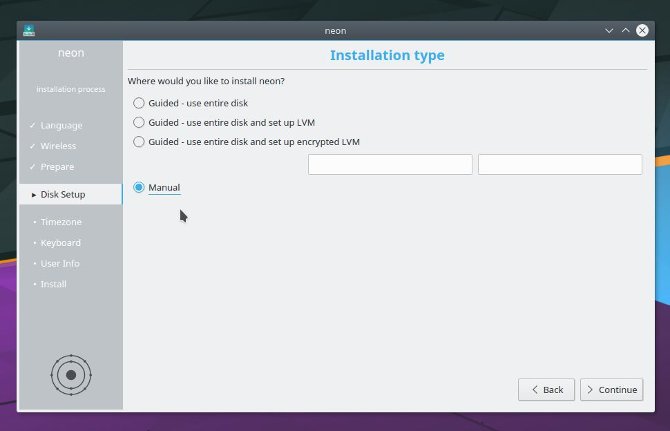
Here, Select:
Locate the Unformated partition (that match the size we allocated in windows multiplied by 1024) and select
You may set
Continue the Wizard, and wait for the prompt to Reboot.
Well, if you reached this step, You have installed Linux (hopefully). So Fireup the System and Select KDE from the Grub Boot Menu .
Although, I'd recommend testing whether Windows works first and then Rebooting into Linux. Hehe just for a last precaution.
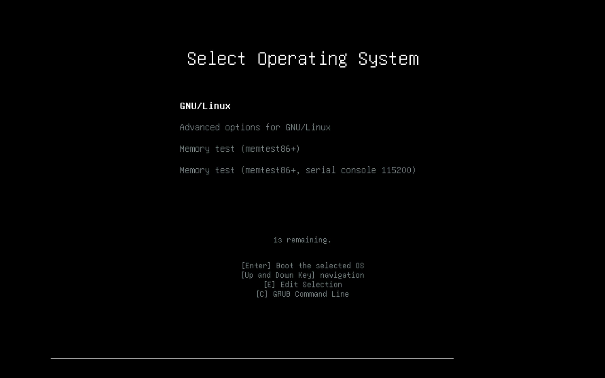
If you don't find Windows, dont fret, its uncommon but definitely possible that Linux didn't detect it properly. So Head over to Linux, Log-in to the system,
PressCtrl+alt+T that should open a terminal and that type sudo update-grub and type in your password. This should allow Grub to re-scan your Drive to locate missing OSes.
Have a great time in Linux, Stay Tuned.
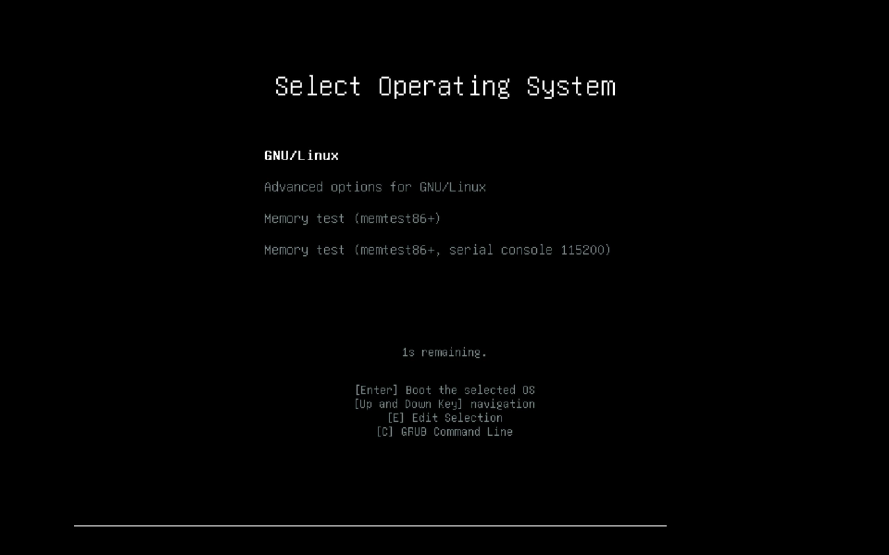
If you don't find Windows, dont fret, its uncommon but definitely possible that Linux didn't detect it properly. So Head over to Linux, Log-in to the system,
Press
Have a great time in Linux, Stay Tuned.